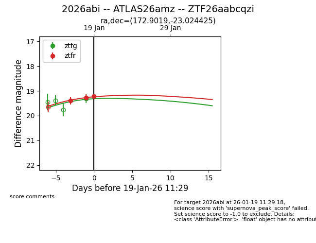
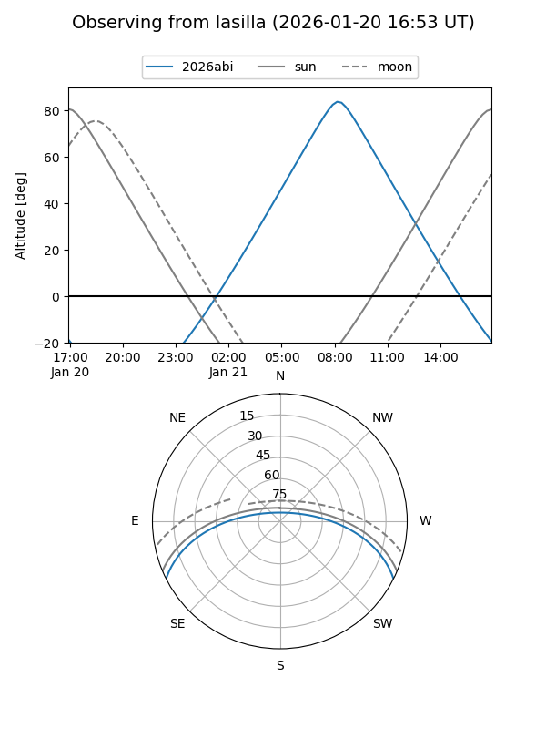
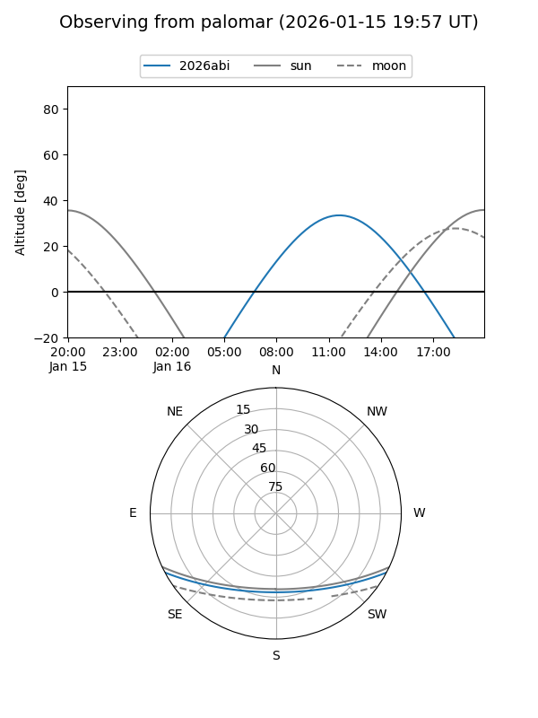
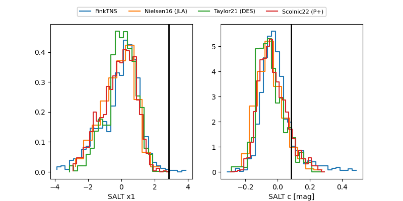

2026abi
Target 2026abi at 2026-01-22 11:36
Aliases and brokers:
FINK: link
Lasair: link
ALeRCE: link
TNS: link
YSE: link
alt names
ZTF26aabcqzi (ztf,fink_ztf)
2026abi (tns,yse)
ATLAS26amz (atlas)
Coordinates:
equatorial (ra, dec) = 172.9019,-23.02442
equatorial (HMS+DMS) = 11:31:36.47,-23:01:27.93
galactic (l, b) = (280.0014,+36.26738)
Flags:
Photometry:
last ztfg=19.24, ztfr=19.22
4 ztfg, 3 ztfr detections
Lightcurve

Visibility


Additional plots
